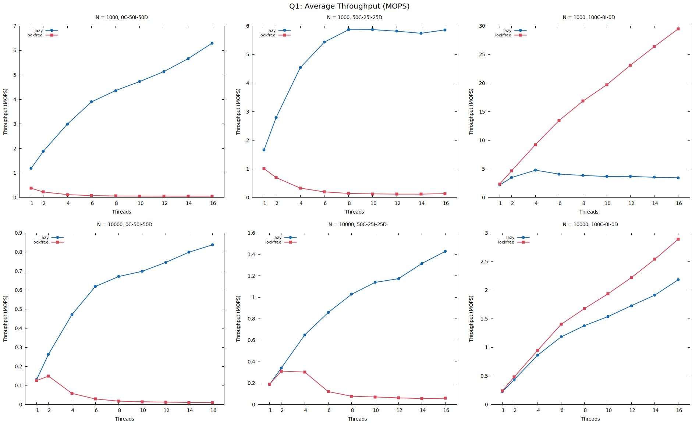
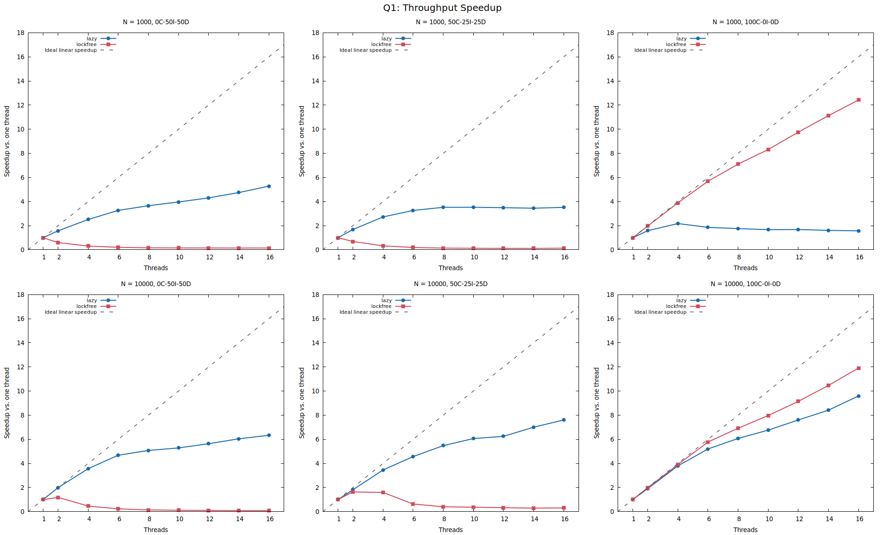
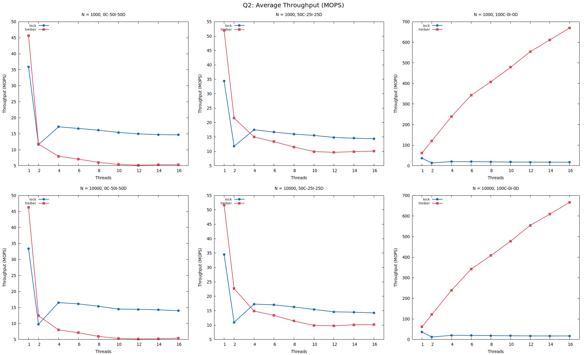
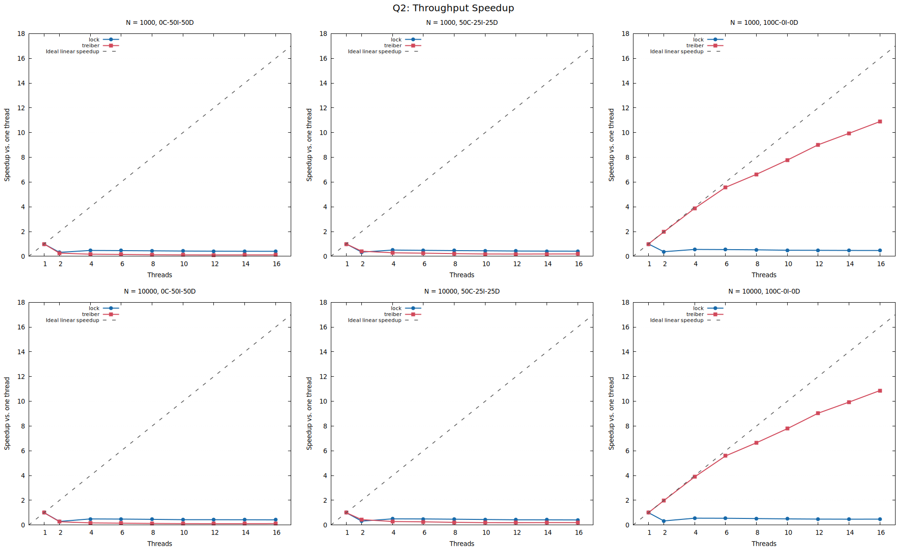
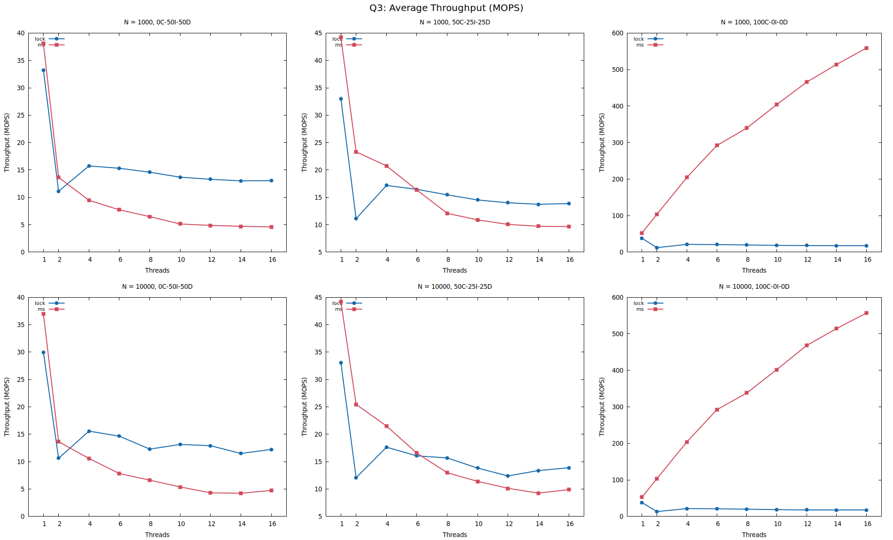
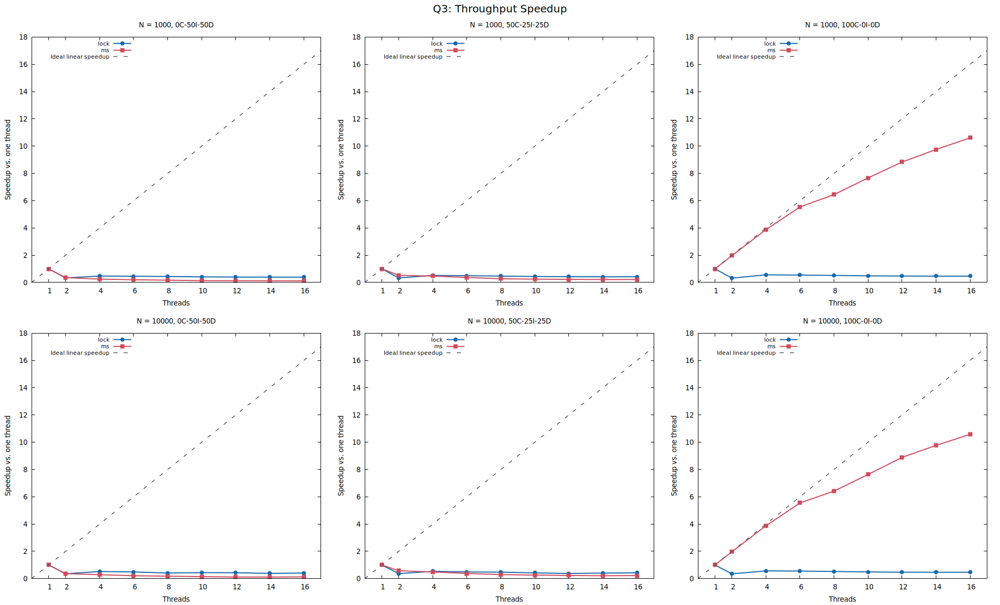
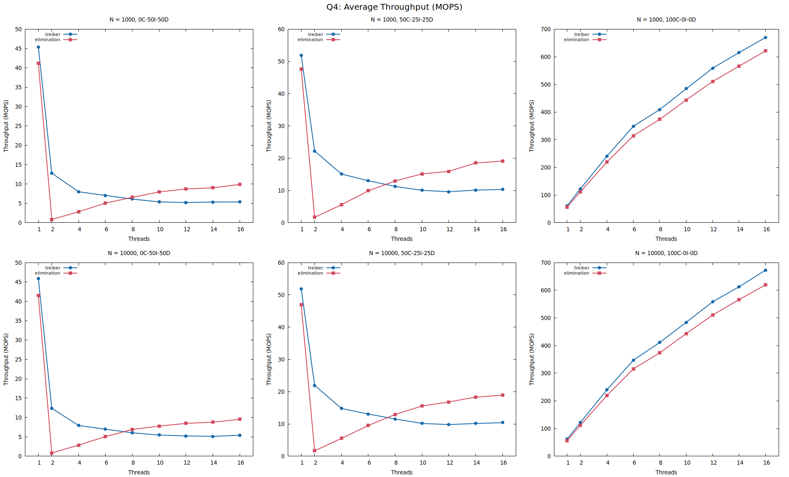
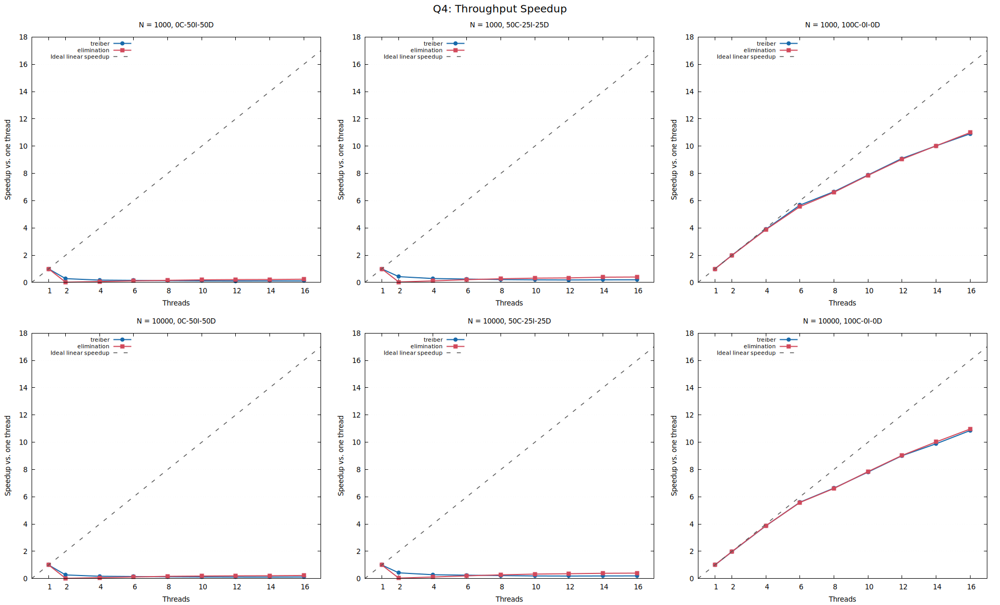

HPC Programming Assignment 2
Performance and scalability report
Experiment dates: 2026-10-08 to 2026-10-13
We compared the two implementations for each structure using concurrent workloads on the IT Lab systems. Each speedup uses the one-thread result for the same implementation, problem size, and workload.
| Problem | Highest observed speedup | Configuration |
|---|---|---|
| Q1: Concurrent doubly linked list | 12.42x | lockfree, N=1000, 100C-0I-0D, 16 threads |
| Q2: Concurrent stack | 10.89x | treiber, N=1000, 100C-0I-0D, 16 threads |
| Q3: Concurrent queue | 10.61x | ms, N=1000, 100C-0I-0D, 16 threads |
| Q4: Elimination-backoff stack | 10.99x | elimination, N=1000, 100C-0I-0D, 16 threads |
Each value is the largest measured speedup for that problem, not a general scaling claim. Workload and problem size matter; the sections below show cases that scale less well.
Machines: three identical Intel Core i7-12700 systems, 12 cores / 20 logical CPUs, 15.3 GiB RAM, Ubuntu, OpenJDK 1.8.0_352.
Every run completed and passed its post-run structure check. The base stress and invariant suite ran on all three hosts. After the sentinel change, the extended Q1 suite passed on Device 1 and covered empty and populated lists, duplicate keys, Integer.MIN_VALUE and Integer.MAX_VALUE insertion/lookup/deletion, concurrent list membership, stack value preservation, per-producer queue order, elimination-stack value exchange, and mixed-operation stress. Both lists use long-valued sentinels outside the int range. These checks are not a formal linearizability proof. CAS retries were not counted, so contention is discussed qualitatively.
The revised Q1 raw file records the actual host name, inhydmupc0899-l. The original Q2-Q4 raw files retain "unknown" because those Java processes did not receive a HOSTNAME value. Question-to-host assignments are recorded in the machine inventory and averaged results.
Throughput and speedup are shown for both implementations, all three workload mixes, and both problem sizes. The speedup plots include the ideal linear reference.

Average throughput (MOPS).

Throughput speedup versus one thread.
| Implementation | Threads | Avg throughput (MOPS) | Speedup |
|---|---|---|---|
| lazy | 1 | 0.1879 | 1.000x |
| lazy | 4 | 0.6495 | 3.457x |
| lazy | 8 | 1.0284 | 5.474x |
| lazy | 16 | 1.4285 | 7.603x |
| lockfree | 1 | 0.1900 | 1.000x |
| lockfree | 4 | 0.3027 | 1.593x |
| lockfree | 8 | 0.0772 | 0.406x |
| lockfree | 16 | 0.0588 | 0.309x |
lazy: peak average throughput 6.2967 MOPS at N=1000, 0C-50I-50D, 16 threads.
At 16 threads, lazy averaged 5.65x speedup across the six size/workload settings (range 1.57x to 9.60x); 0 of six settings were below its one-thread throughput.
lockfree: peak average throughput 29.4578 MOPS at N=1000, 100C-0I-0D, 16 threads.
At 16 threads, lockfree averaged 4.17x speedup across the six size/workload settings (range 0.09x to 12.42x); 4 of six settings were below its one-thread throughput.
The lazy list scales across all six size/workload settings at 16 threads. The snapshot list's strongest result is read-only; its copy-on-write updates become expensive as the list grows, and four of the six 16-thread cases fall below their one-thread baselines.
Throughput and speedup are shown for both implementations, all three workload mixes, and both problem sizes. The speedup plots include the ideal linear reference.

Average throughput (MOPS).

Throughput speedup versus one thread.
| Implementation | Threads | Avg throughput (MOPS) | Speedup |
|---|---|---|---|
| lock | 1 | 34.4541 | 1.000x |
| lock | 4 | 17.2911 | 0.502x |
| lock | 8 | 16.2834 | 0.473x |
| lock | 16 | 14.2436 | 0.413x |
| treiber | 1 | 51.6454 | 1.000x |
| treiber | 4 | 14.8700 | 0.288x |
| treiber | 8 | 11.4170 | 0.221x |
| treiber | 16 | 10.1469 | 0.196x |
lock: peak average throughput 36.4349 MOPS at N=10000, 100C-0I-0D, 1 threads.
At 16 threads, lock averaged 0.44x speedup across the six size/workload settings (range 0.41x to 0.48x); 6 of six settings were below its one-thread throughput.
treiber: peak average throughput 670.0176 MOPS at N=1000, 100C-0I-0D, 16 threads.
At 16 threads, treiber averaged 3.73x speedup across the six size/workload settings (range 0.12x to 10.89x); 4 of six settings were below its one-thread throughput.
The lock-based stack is below its one-thread baseline in all six settings at 16 threads. Treiber performs much better for read-only peek workloads, but its shared top reference remains a contention point for push/pop workloads.
Throughput and speedup are shown for both implementations, all three workload mixes, and both problem sizes. The speedup plots include the ideal linear reference.

Average throughput (MOPS).

Throughput speedup versus one thread.
| Implementation | Threads | Avg throughput (MOPS) | Speedup |
|---|---|---|---|
| lock | 1 | 33.0329 | 1.000x |
| lock | 4 | 17.6473 | 0.534x |
| lock | 8 | 15.6786 | 0.475x |
| lock | 16 | 13.8852 | 0.420x |
| ms | 1 | 44.1774 | 1.000x |
| ms | 4 | 21.5074 | 0.487x |
| ms | 8 | 12.9704 | 0.294x |
| ms | 16 | 9.9005 | 0.224x |
lock: peak average throughput 38.0589 MOPS at N=1000, 100C-0I-0D, 1 threads.
At 16 threads, lock averaged 0.43x speedup across the six size/workload settings (range 0.39x to 0.47x); 6 of six settings were below its one-thread throughput.
ms: peak average throughput 558.9839 MOPS at N=1000, 100C-0I-0D, 16 threads.
At 16 threads, ms averaged 3.65x speedup across the six size/workload settings (range 0.12x to 10.61x); 4 of six settings were below its one-thread throughput.
The lock-based queue is below its one-thread baseline in all six settings at 16 threads. Michael-Scott scales strongly for read-only peek workloads, while mixed workloads contend on shared queue state. The longer Q3 runs are included rather than discarded.
Throughput and speedup are shown for both implementations, all three workload mixes, and both problem sizes. The speedup plots include the ideal linear reference.

Average throughput (MOPS).

Throughput speedup versus one thread.
| Implementation | Threads | Avg throughput (MOPS) | Speedup |
|---|---|---|---|
| treiber | 1 | 51.9210 | 1.000x |
| treiber | 4 | 14.7875 | 0.285x |
| treiber | 8 | 11.5372 | 0.222x |
| treiber | 16 | 10.3990 | 0.200x |
| elimination | 1 | 46.9748 | 1.000x |
| elimination | 4 | 5.5206 | 0.118x |
| elimination | 8 | 12.9512 | 0.276x |
| elimination | 16 | 18.9109 | 0.403x |
treiber: peak average throughput 672.8907 MOPS at N=10000, 100C-0I-0D, 16 threads.
At 16 threads, treiber averaged 3.73x speedup across the six size/workload settings (range 0.12x to 10.90x); 4 of six settings were below its one-thread throughput.
elimination: peak average throughput 621.3997 MOPS at N=1000, 100C-0I-0D, 16 threads.
At 16 threads, elimination averaged 3.87x speedup across the six size/workload settings (range 0.23x to 10.99x); 4 of six settings were below its one-thread throughput.
At 16 threads, elimination outperformed Treiber in 4 of six matched configurations; the throughput ratio ranged from 0.92x to 1.86x, so its benefit was workload-dependent.
At 16 threads, elimination beats Treiber in four of six matched cases, with ratios from 0.92x to 1.86x. This is a workload-dependent gain, not a consistent win; peek operations still use the central stack.
Compare each curve within its host and matching implementation, size, and workload. Read-heavy structures may scale differently from update-heavy structures: lock-based paths serialize on shared locks, while non-blocking paths can experience failed CAS retries and cache-coherence traffic on hot references. More threads can improve aggregate throughput, saturate, or regress depending on the critical path and scheduling overhead.
The Q1 snapshot design trades update cost for immutable versions and a single CAS publication. The lock-based stack and queue serialize updates, while Treiber and Michael-Scott avoid a global lock but still contend on shared atomic references. The measurements reflect these tradeoffs for the tested workloads; they should not be generalized beyond this setup.
Raw operation counts, elapsed times, and run flags are included in the CSV files. Averages and speedups were calculated from those rows. The three machines reported the same CPU model, but each question's speedup is based only on runs from its assigned host.
The accompanying files include Java sources, correctness tests, launch and analysis scripts, GNUplot charts, raw data, averages, validation records, the machine inventory, and this report. Compiled class files are not included.